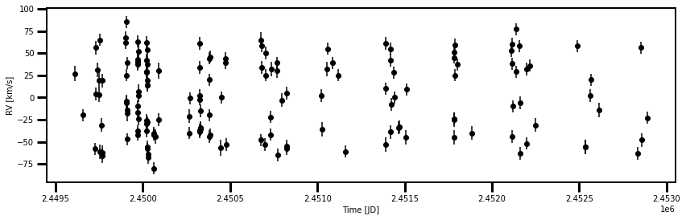
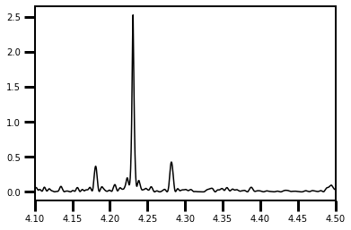
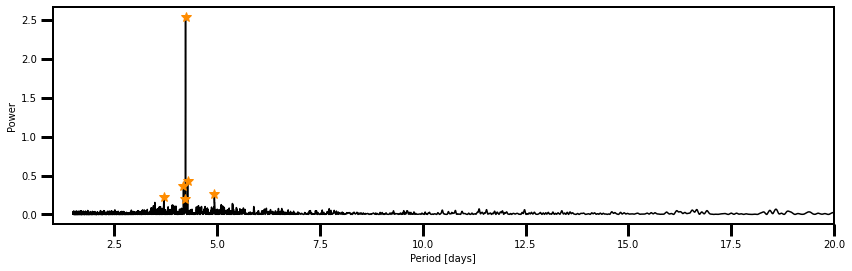
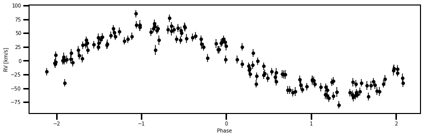

Quickstart Tutorial¶
[1]:
import sys
import lmfit, os
import numpy as np
import pandas as pd
from astropy import units
import matplotlib.pyplot as plt
from scipy.stats import norm
from scipy.optimize import minimize
from scipy.optimize import least_squares
from astropy.timeseries import LombScargle
from lightkurve.lightcurve import LightCurve as LC
from scripts import *
plt.rcParams['font.size'] = 15
WARNING: leap-second auto-update failed due to the following exception: ValueError("Malformed URL: '//anaconda3/lib/python3.7/site-packages/astropy/utils/iers/data/Leap_Second.dat'") [astropy.time.core]
[2]:
datadir = '/Users/arcticfox/Documents/GitHub/ri-exoplanet-detection/datasets'
dat = np.loadtxt(os.path.join(datadir, '51Pegb.txt'), skiprows=1)
[3]:
rvs = RV_Detection(time=dat[:,0], vel=dat[:,1], err=dat[:,2])
[4]:
plt.figure(figsize=(14,4))
plt.errorbar(rvs.df['Time'], rvs.df['Vel'], yerr=rvs.df['Err'],
marker='o', linestyle='', c='k')
plt.xlabel('Time [JD]')
plt.ylabel('RV [km/s]');

[5]:
rvs = RV_Detection(dat[:,0], dat[:,1], dat[:,2])
[6]:
#rvs.gls_periodogram(norm='Scargle')
rvs.lomb_scargle()#norm='Scargle')
[7]:
plt.plot(1.0/rvs.LS_results[0], rvs.LS_results[1], c='k')
plt.xlim(4.1,4.5)
[7]:
(4.1, 4.5)

[19]:
rvs.build_confidence_set(minperiod=1.5, maxperiod=30.0, null_samples=100)
0%| | 0/7 [00:00<?, ?it/s]//anaconda3/lib/python3.7/site-packages/numpy/lib/nanfunctions.py:1111: RuntimeWarning: Mean of empty slice
return np.nanmean(a, axis, out=out, keepdims=keepdims)
14%|█▍ | 1/7 [00:07<00:44, 7.49s/it]
[1.05543915 1.1223563 1.1411412 1.1176123 1.08420448 1.23364317
1.18609701 1.15246074 1.2316898 1.14337506 1.06506277 1.09446341
1.03161697 1.15377323 1.06642763 1.10446477 1.10848885 1.04630345
1.053987 1.16379619 1.13612945 1.0639554 1.13421328 1.15954287
1.0734002 1.07388714 1.16737744 1.06806241 1.20406859 1.11803296
1.12759687 1.15140322 1.1668742 1.01942274 1.140659 1.15581743
1.28886868 1.17105576 1.18629165 1.21795689 1.13695025 1.18885023
1.06843682 1.10562951 1.20190943 1.09827429 1.22847595 1.16578055
0.98580607 1.14014331 1.13693459 1.19318346 1.21857452 1.12299656
1.07474963 1.16888646 1.08828965 1.0637789 1.17892317 1.06059527
1.12354372 1.21931559 1.23081578 1.20451946 1.12728694 1.20903591
1.08471885 1.20728479 1.17892721 1.07708278 1.1040201 1.0923787
1.01967821 1.06525468 1.1238092 1.16663759 1.0853257 1.1241849
1.14283087 1.19975744 1.16119856 0.98517659 1.05365674 1.07252806
1.20812732 1.07453438 1.10012485 1.17104089 1.20764875 1.20121051
1.19740455 1.24619912 1.03993245 1.25440459 1.0746663 1.25453115
1.05226966 1.07944541 1.05519329 1.13006403]
29%|██▊ | 2/7 [00:14<00:37, 7.48s/it]
[0.96678195 1.04041436 1.03322538 1.0289071 0.94805876 1.07674905
1.07636095 1.0304249 1.06016576 1.05375386 0.88262802 0.98566798
0.93728727 0.97556474 1.01042195 1.00761727 1.01037923 0.97784449
0.94209378 1.00778806 1.03181396 0.91300768 1.02177636 1.02653694
1.00471902 0.99692758 0.96340395 0.98142563 1.09587557 0.95169295
0.96421525 1.02287008 1.06793568 0.98013759 0.96877252 1.01973655
1.08491553 1.01282344 1.02176666 1.04891872 0.93301375 1.1324207
0.97207121 1.04440641 1.11324577 0.9945444 1.13328851 1.0846053
0.98958159 1.03973301 1.0237274 1.01064426 1.10011022 1.05466876
0.92095048 1.1201508 0.99252401 0.97314421 1.03362383 0.98801028
0.96790161 1.10383156 1.05146652 1.01216064 1.03202623 1.07592862
1.03995679 1.09882222 1.06990908 0.97457164 0.99137128 0.96395734
1.06776776 0.98510133 0.94445118 0.96645899 0.90623219 1.00817079
0.94156457 1.02888891 1.03297691 1.00843551 0.97553319 0.89837563
1.09515783 0.98931026 0.9226708 0.97154049 1.11061307 1.01671703
1.09700706 1.08450171 0.94970827 1.16029293 1.03499867 1.08833241
0.95793427 0.97643108 1.03079763 0.98136469]
43%|████▎ | 3/7 [00:22<00:29, 7.47s/it]
[1.16459219 1.19376325 1.18203821 1.24427498 1.17897475 1.247424
1.24097465 1.25875442 1.27183761 1.25626324 1.09478136 1.13700183
1.19565044 1.20245494 1.13540612 1.23410971 1.15728755 1.19401282
1.15286274 1.20840525 1.31731317 1.11337004 1.24176267 1.24162095
1.17153026 1.15194139 1.27571738 1.13044514 1.34278253 1.21470024
1.21502687 1.18188799 1.25004498 1.10104809 1.19135963 1.24490771
1.34590907 1.31168492 1.23510411 1.31602076 1.28595237 1.27355797
1.11334893 1.22122202 1.26618836 1.08251255 1.29207263 1.24016966
1.06557016 1.22065537 1.21771834 1.32116138 1.23982905 1.17867462
1.13569816 1.25886763 1.10712807 1.12081505 1.22567877 1.13832073
1.15393175 1.25436129 1.27835764 1.27599769 1.23481442 1.25816195
1.13426398 1.32497069 1.27809397 1.18974519 1.19581315 1.2038825
1.20864374 1.13439615 1.19471575 1.23815156 1.1693337 1.22925874
1.17064876 1.21662513 1.20171211 1.07950358 1.10130636 1.16864905
1.3037383 1.18900112 1.12323947 1.22441137 1.31626364 1.24251215
1.29588513 1.2954014 1.14094328 1.33427096 1.17693762 1.33244326
1.14528829 1.16222389 1.17403723 1.21053764]
57%|█████▋ | 4/7 [00:30<00:22, 7.60s/it]
[0.00272533 0. 0.01161521 0.01309877 0.00275144 0.00357312
0.00163222 0.00170189 0. 0.0102603 0. 0.00265013
0.00333274 0.00291461 0. 0.00430825 0.00227839 0.00327782
0.0055931 0. 0. 0.00952959 0.00043205 0.00176795
0.00192417 0.01043446 0.00080384 0.00578169 0.00970987 0.01720633
0.00033072 0.00459491 0. 0. 0.00100658 0.
0.00349178 0. 0.00595463 0.00156665 0.00130915 0.00253405
0. 0.00317426 0. 0.00184713 0. 0.00406545
0.00119911 0.00072239 0. 0.00424283 0. 0.00149684
0. 0.00055593 0.00510085 0.00691039 0.00339461 0.00537076
0. 0. 0. 0.00028567 0.00190138 0.
0.00571876 0. 0.00353518 0. 0.00484244 0.00274946
0.00763703 0. 0.0061501 0.0007264 0.00556553 0.
0. 0. 0. 0.00918226 0. 0.
0.01131481 0. 0.0021639 0.00658688 0.00091834 0.00209804
0.00361193 0.00093969 0.00096476 0. 0.00317495 0.
0.00530226 0.00041515 0.00078594 0.00495784]
71%|███████▏ | 5/7 [00:37<00:15, 7.56s/it]
[1.11606145 1.17693122 1.16790438 1.18440488 1.12455122 1.26452099
1.22986063 1.19995843 1.23440573 1.18101278 1.09935367 1.13878994
1.1253818 1.20936677 1.11790224 1.18852864 1.16144736 1.144886
1.08469819 1.21685108 1.22326023 1.05274929 1.21106872 1.20259824
1.14125818 1.08853691 1.19161207 1.0807031 1.3105212 1.13236929
1.14397542 1.11487277 1.16371872 1.05263074 1.19026815 1.22221187
1.31954342 1.24218009 1.17934995 1.24640487 1.26367633 1.22681801
1.13497055 1.15616332 1.20390486 1.05446423 1.2554874 1.19879307
1.04588678 1.19716497 1.19413089 1.23395354 1.23066111 1.17037368
1.13030578 1.21847236 1.06727007 1.11870386 1.23655879 1.12308048
1.18627704 1.24273819 1.22237189 1.25803377 1.22705859 1.26325413
1.13873977 1.34412328 1.25691768 1.13502249 1.12088119 1.17626042
1.1412432 1.16778818 1.15751215 1.22938531 1.12999921 1.15371946
1.17169382 1.21699904 1.20126578 1.07094863 1.1278374 1.11976263
1.25892042 1.12012107 1.11890474 1.16983795 1.25257098 1.20931605
1.21921474 1.22781309 1.09469574 1.24751123 1.14077507 1.29875023
1.09827678 1.14603365 1.17610447 1.15571282]
86%|████████▌ | 6/7 [00:45<00:07, 7.54s/it]
[0.96595869 1.02022038 1.12582396 1.02565169 1.00243258 1.13269126
1.06467636 1.04470224 1.11875083 1.07814489 0.98425178 1.04784465
1.01669618 1.12555775 1.02761452 1.08550681 1.09978262 1.08508114
0.99349557 1.03985568 1.04472089 0.94079641 1.08971181 1.08784784
1.0643266 0.96525294 0.98180402 1.02094538 1.15600015 1.07324962
0.97367551 1.01256256 1.08270743 1.04531315 1.00741535 0.96529066
1.11061144 1.09596797 1.08205256 1.13374496 1.18373104 1.08829253
1.00595864 1.08576932 1.16197289 0.97950392 1.09977736 1.0802389
0.9196517 1.03689294 1.08623755 1.07586581 1.18584597 1.09131559
0.98811564 1.06029725 1.05095643 0.98689096 1.10728397 1.07816548
0.99435135 1.13278147 1.1369683 1.08166945 1.10406345 1.08140226
1.10246752 1.18025127 1.17301633 1.02879627 1.04565633 1.03390472
1.06568243 0.98229395 1.1180814 1.05196707 1.07074543 1.04171164
1.01231185 1.04480303 1.06162098 1.00222773 0.99059321 0.96951557
1.08897098 0.99572997 1.00167775 1.07473773 1.06320482 1.09028475
1.10678978 1.12045125 1.02001364 1.13196593 1.0198668 1.09383502
1.00717515 1.04659981 1.04911881 1.01173581]
100%|██████████| 7/7 [00:52<00:00, 7.54s/it]
[1.09555149 1.17092774 1.13826772 1.15944904 1.14217545 1.2245419
1.22122377 1.22188339 1.28692813 1.211643 1.05657055 1.15870383
1.13332768 1.16724944 1.07012899 1.11123715 1.13390451 1.12704608
1.07545445 1.17265538 1.24508778 1.16107627 1.19351121 1.20644562
1.09055674 1.12680412 1.14660262 1.09752613 1.26744029 1.1305819
1.20734532 1.18357495 1.16261173 1.11390632 1.18392333 1.19279764
1.25349819 1.22863443 1.13664813 1.22071472 1.19154763 1.17607668
1.14189539 1.14305874 1.24149121 1.15695522 1.24501555 1.17737688
1.06416063 1.18216567 1.16526422 1.18637919 1.20466329 1.18050407
1.06961932 1.2356626 1.1180541 1.08387355 1.18526196 1.1318452
1.10440453 1.27059301 1.27269743 1.25154577 1.17306963 1.21455688
1.0903688 1.28430299 1.20567374 1.06580216 1.1388326 1.12172502
1.11907822 1.09787774 1.19221522 1.15358451 1.10901376 1.15678975
1.13975779 1.18596534 1.21122396 1.0583148 1.09684757 1.11627276
1.23535458 1.10358226 1.09182332 1.14034525 1.19375409 1.1273946
1.22691062 1.20704841 1.08002695 1.24660468 1.12380513 1.26506767
1.11074336 1.06690058 1.13422593 1.17365436]
[20]:
plt.figure(figsize=(14,4))
plt.plot(1.0/rvs.LS_results[0], rvs.LS_results[1], 'k')
_, peak_inds = rvs.get_candidate_periods()
plt.plot(1.0/rvs.LS_results[0][peak_inds],
rvs.LS_results[1][peak_inds], 'darkorange', marker='*', ms=10, linestyle='')
plt.xlim(1,20)
plt.xlabel('Period [days]')
plt.ylabel('Power');

[21]:
# columns = theta, S_null <= sobs, S_null >= sobs, S_null = sobs
rvs.pvals_m
[21]:
array([[4.93241378e+00, 1.13213866e+00, nan, nan],
[4.28186847e+00, 1.01140245e+00, nan, nan],
[4.23853381e+00, 1.21261894e+00, nan, nan],
[4.23075879e+00, 0.00000000e+00, 1.66705445e-03, 0.00000000e+00],
[4.22312114e+00, 1.17659582e+00, nan, nan],
[4.18106833e+00, 1.06241290e+00, nan, nan],
[3.70319896e+00, 1.16026265e+00, nan, nan]])
[22]:
rvs.cset ## This still isn't working for some reason
[22]:
array([], dtype=float64)
[23]:
rvs.peak_period
[23]:
4.230758786999776
[13]:
lk = LC(rvs.df['Time'], rvs.df['Vel'], flux_err=rvs.df['Err'])
folded = lk.fold(period=rvs.peak_period)
//anaconda3/lib/python3.7/site-packages/lightkurve/lightcurve.py:202: LightkurveDeprecationWarning: passing flux as a positional argument is deprecated, please use ``flux=...`` instead.
LightkurveDeprecationWarning,
[14]:
plt.figure(figsize=(14,4))
plt.errorbar(folded.time.value, folded.flux, yerr=folded.flux_err,
marker='o', c='k', linestyle='')
plt.xlabel('Phase')
plt.ylabel('RV [km/s]');

[15]:
rvs.test_period_theta0(theta0=4.1)
---------------------------------------------------------------------------
KeyboardInterrupt Traceback (most recent call last)
<ipython-input-15-7eea70b098fa> in <module>
----> 1 rvs.test_period_theta0(theta0=4.1)
~/Documents/GitHub/rvs-by-ri/scripts/main.py in test_period_theta0(self, theta0, minperiod, maxperiod, null_samples, norm)
307 self.null_periodogram(theta0=theta0, minperiod=minperiod,
308 maxperiod=maxperiod,
--> 309 null_samples=null_samples)
310
311 # 4a. Observed test statistic
~/Documents/GitHub/rvs-by-ri/scripts/main.py in null_periodogram(self, theta0, minperiod, maxperiod, norm, null_samples, verbose, ret_results)
236 maxperiod=maxperiod,
237 ret_results=True,
--> 238 norm=norm)
239
240 # Creates S_null array
~/Documents/GitHub/rvs-by-ri/scripts/main.py in lomb_scargle(self, y, minperiod, maxperiod, norm, ret_results)
87 maximum_frequency=1.0/minperiod,
88 samples_per_peak=50.0,
---> 89 normalization='log')
90 else:
91 gls = Gls(lc=[self.df['Time'],
//anaconda3/lib/python3.7/site-packages/astropy/timeseries/periodograms/lombscargle/core.py in autopower(self, method, method_kwds, normalization, samples_per_peak, nyquist_factor, minimum_frequency, maximum_frequency)
300 normalization=normalization,
301 method=method, method_kwds=method_kwds,
--> 302 assume_regular_frequency=True)
303 return frequency, power
304
//anaconda3/lib/python3.7/site-packages/astropy/timeseries/periodograms/lombscargle/core.py in power(self, frequency, normalization, method, assume_regular_frequency, method_kwds)
362 normalization=normalization,
363 method=method, method_kwds=method_kwds,
--> 364 assume_regular_frequency=assume_regular_frequency)
365 return power * self._power_unit(normalization)
366
//anaconda3/lib/python3.7/site-packages/astropy/timeseries/periodograms/lombscargle/implementations/main.py in lombscargle(t, y, dy, frequency, method, assume_regular_frequency, normalization, fit_mean, center_data, method_kwds, nterms)
214 "or 'fastchi2' methods")
215
--> 216 PLS = METHODS[method](*args, **kwds)
217 return PLS.reshape(output_shape)
//anaconda3/lib/python3.7/site-packages/astropy/timeseries/periodograms/lombscargle/implementations/fast_impl.py in lombscargle_fast(t, y, dy, f0, df, Nf, center_data, fit_mean, normalization, use_fft, trig_sum_kwds)
87 # 1. compute functions of the time-shift tau at each frequency
88 Sh, Ch = trig_sum(t, w * y, **kwargs)
---> 89 S2, C2 = trig_sum(t, w, freq_factor=2, **kwargs)
90
91 if fit_mean:
//anaconda3/lib/python3.7/site-packages/astropy/timeseries/periodograms/lombscargle/implementations/utils.py in trig_sum(t, h, df, N, f0, freq_factor, oversampling, use_fft, Mfft)
144 grid = extirpolate(tnorm, h, Nfft, Mfft)
145
--> 146 fftgrid = np.fft.ifft(grid)[:N]
147 if t0 != 0:
148 f = f0 + df * np.arange(N)
<__array_function__ internals> in ifft(*args, **kwargs)
//anaconda3/lib/python3.7/site-packages/numpy/fft/_pocketfft.py in ifft(a, n, axis, norm)
279 else:
280 inv_norm = n
--> 281 output = _raw_fft(a, n, axis, False, False, inv_norm)
282 return output
283
//anaconda3/lib/python3.7/site-packages/numpy/fft/_pocketfft.py in _raw_fft(a, n, axis, is_real, is_forward, inv_norm)
72
73 if axis == a.ndim-1:
---> 74 r = pfi.execute(a, is_real, is_forward, fct)
75 else:
76 a = swapaxes(a, axis, -1)
KeyboardInterrupt:
[ ]:
rvs.S_null, rvs.sobs
[ ]: